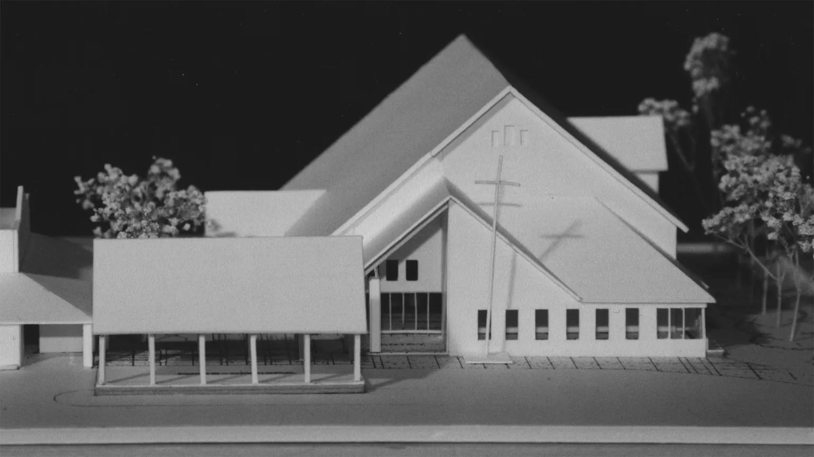
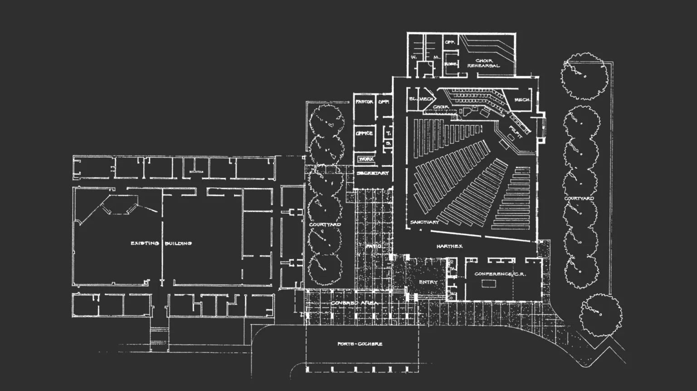
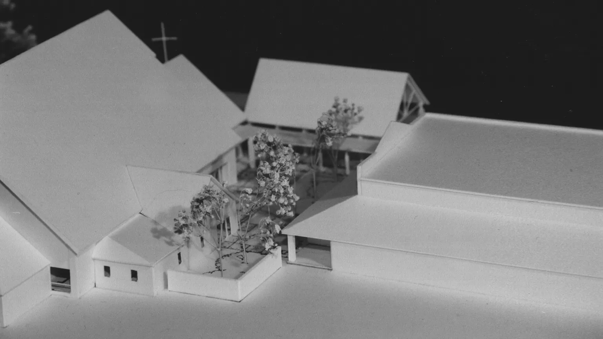
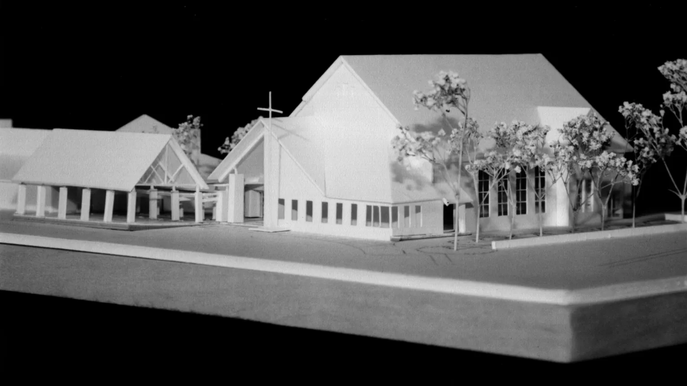

Providence Presbyterian Church
Clinton, Mississippi
The project scope was to expand an existing church facility with a 13,500 square foot addition to include a 500-seat sanctuary, choir rehearsal room, session/multi-purpose room, new church offices, and a porte cochere. Of particular importance to the Church was the development of a secure, well-considered linking courtyard between the new and existing buildings, suitable for church gatherings and meditation, and an enclosed, but fully transparent, connecting corridor between the new and existing buildings allowing dry, secure passage between the structures, while allowing viewers full enjoyment of the pristine internal courtyard from the exterior through structural glass panels.
In association with Clemmer & Clark Architects



